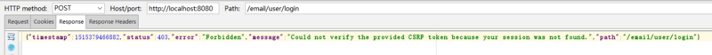
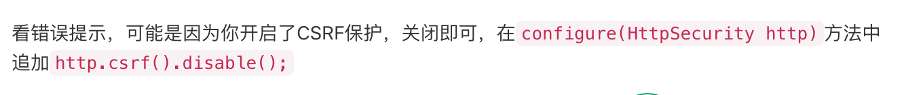

Q4_Actuator与Spring security 安全性校验调整
相同问题引用
错误描述
有两个controller，一个是所有用户可以访问的@RequestMapping("user"),还有一个是管理员可以访问的@RequestMapping("admin")。
/user/login 是 UserController 中的登录 url。所有操作（除登录注销）都要登录之后才能进行。
现在想用 springboot 结合 spring security 实现权限管理。系统是前后端分离的，controller 中返回数据，不返回页面,WebMvcConfig 也没有配置什么。
但 /user/login，post 怎么也不通。报 403 错误。这是错误信息。

{"timestamp":1515379466882,"status":403,"error":"Forbidden","message":"Could not verify the provided CSRF token because your session was not found.","path":"/email/user/login"}
这是WebSecurityConfig
@Configuration
@EnableWebSecurity
public class WebSecurityConfig extends WebSecurityConfigurerAdapter {
@Bean
UserDetailsService customUserService() { //注册UserDetailsService 的bean
return new CustomUserService();
}
@Override
protected void configure(HttpSecurity http) throws Exception {
http.authorizeRequests()
.antMatchers("/**").access("hasRole('ROLE_USER')")
.antMatchers("/admin/**").access("hasRole('ROLE_ADMIN')")
.anyRequest().authenticated().and() // access after login
// .rememberMe().tokenValiditySeconds(60 * 60 * 24 * 7).key("").and()
.formLogin().loginProcessingUrl("user/login").permitAll().and()
.logout().permitAll();
}
@Override
protected void configure(AuthenticationManagerBuilder auth) throws Exception {
auth.userDetailsService(customUserService());
}
}
这是CustomUserService
@Service
public class CustomUserService implements UserDetailsService {
@Autowired
private UserService userService;
@Override
public UserDetails loadUserByUsername(String s) throws UsernameNotFoundException {
System.out.println("loadUser " + s);
User user = userService.getUserByUsername(s);
if (user == null || user.getIsDel() == 1) {
throw new UsernameNotFoundException("user not exist");
}
List<GrantedAuthority> auths = new ArrayList<>();
for (Role role : user.getRoles()) {
auths.add(new SimpleGrantedAuthority(role.getName())); //不同用户会返回不同的role.name：ROLE_USER, ROLE_ADMIN
}
return new org.springframework.security.core.userdetails.User(s , user.getPwd(), auths);
}
}
最后即使我在WebSecurity中什么也不配置，默认应该是不需要验证session吧。 仍然不行。
protected void configure(HttpSecurity http) throws Exception {
}
错误原因
错误原因如下：
